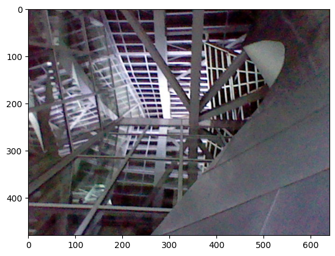

Image Processing#
Section table of contents#
Set up Environment#
I suppose I better import some modules:
scipy
numpy
matplotlib
>>> import numpy as np
>>> import matplotlib as mpl
>>> import matplotlib.pyplot as plt
%matplotlib inline
>>> from scipy import ndimage, fft
>>> from PIL import Image
image = Image.open('../images/HNI_0079.JPG')
image
print(image.size)
(640, 480)
imarray = np.asarray(image)
tint_imarray = imarray[:,:,0]
plt.imshow( tint_imarray)
<matplotlib.image.AxesImage at 0x7f0d147c4a60>
Hmmm, load
im = image.load()
im[0,0]
(65, 45, 54)
>>> import matplotlib.image as mpimg
gehry = mpimg.imread('../images/HNI_0079.JPG')
#print(gehry)
imgplt = plt.imshow(gehry)

Uh, let’s make it gray, why not.
grayimage = image.convert("L")
grayimage
res = fft.fft2(grayimage)
res.shape
(480, 640)
print(res)
[[ 2.66917690e+07 -0.j -1.39964292e+06-1147714.03679204j
2.57491094e+05 +594749.09698088j ... -6.20386968e+05 -233909.22969746j
2.57491094e+05 -594749.09698088j -1.39964292e+06+1147714.03679204j]
[-3.03381645e+06 -840934.76381738j -1.14718939e+06+2248986.3581505j
-4.47152627e+04 -622303.06579693j ... 3.91728096e+05 -457394.91661156j
-1.77918329e+05 +542824.34785403j 2.32751297e+06 -685372.75370134j]
[-7.08756725e+05+1468642.70388188j 4.31981462e+05 -746960.64380495j
1.12946813e+06 +110757.80963733j ... 1.59031868e+04 -71392.96328951j
2.66157854e+05 -220554.22920057j 2.95619416e+05 +744092.26883772j]
...
[-4.30122749e+05 -617028.83193274j 7.14654790e+05 +109269.59080997j
4.12649424e+05 +562398.7771765j ... 4.07094052e+05 +64093.40896129j
-4.67688355e+04 +188397.6983799j -8.94369432e+05 +212321.37268023j]
[-7.08756725e+05-1468642.70388188j 2.95619416e+05 -744092.26883772j
2.66157854e+05 +220554.22920057j ... -5.47066376e+05 +400109.09569525j
1.12946813e+06 -110757.80963733j 4.31981462e+05 +746960.64380495j]
[-3.03381645e+06 +840934.76381738j 2.32751297e+06 +685372.75370134j
-1.77918329e+05 -542824.34785403j ... -4.94791822e+05 -399972.6919041j
-4.47152627e+04 +622303.06579693j -1.14718939e+06-2248986.3581505j ]]
Image Data#
box of numbers